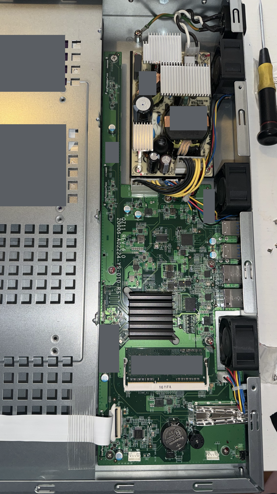
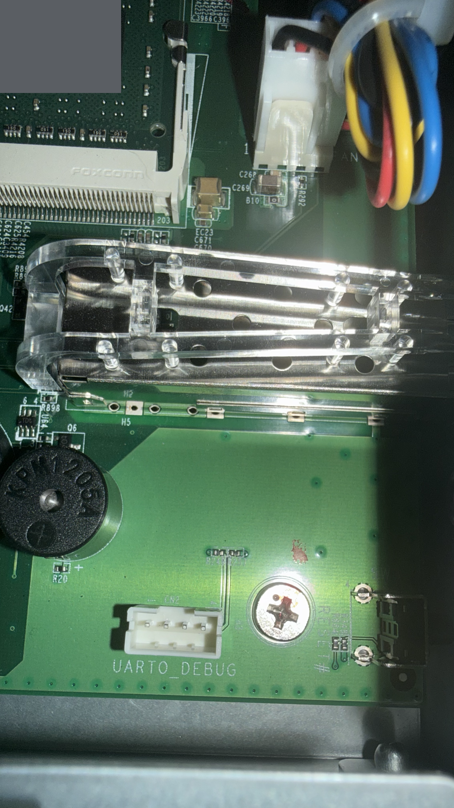
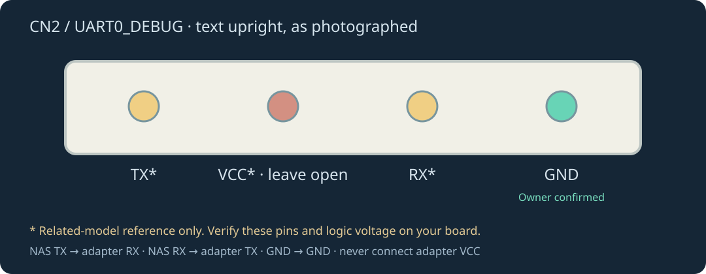

Retained firmware
The existing SPI bootloader and enclosure MCU remain in place. No bootloader or EEPROM rewrite is part of the accepted method.
YOUR HARDWARE. YOUR NAS.
FreeQNAP brings locally administered Debian to the QNAP TS-431XeU, with native enclosure support and a storage-focused dashboard. This guide records the actual boot and hardware work, then shows the route to an independent NAS.
01 / HARDWARE
The tested model is the TS-431XeU-2G-US, a four-bay rackmount NAS using Annapurna Labs AL314, 2 GiB RAM and an ARMv7 CPU. It runs 32-bit Debian armhf. TS-431P, TS-231P and ARMv8 TS-x32x projects are valuable references, but their device trees, flash offsets and wiring are not interchangeable.

The existing SPI bootloader and enclosure MCU remain in place. No bootloader or EEPROM rewrite is part of the accepted method.
The custom kernel and SPEC3 helpers support the tested network, SATA, USB2, thermal, fan, LED, button, buzzer and power-off behavior.
SFP+ traffic, physical disk replacement, broader power-loss recovery and full flash restoration remain unaccepted. Bounded adaptive cooling and hardware watchdog expiration have passed their documented tests; this does not cover electrical fan failure or every reset mode.
02 / SERIAL CONSOLE
The tested chassis had no jack behind its rear console opening. The populated white four-pin CN2 / UART0_DEBUG header supplied the serial console. Do not use the nearby MCU programming header.


The related TS-431P reference lists GND, RX, VCC and TX with its own numbering. Reversing that listed order with ground at the right gives the reference labels above. Only the rightmost ground has been explicitly reconfirmed for publication on this board. The remaining positions and measured voltage must be verified before treating this as a complete electrical pinout. QNAP pinouts vary; they are not universal.
03 / CAPTURE & INSPECT
Use a spare unit with disposable disks. Start the exclusive UART capture with the NAS off. Substitute your real UART device and a private session folder.
python3 installer/capture.py --port /dev/YOUR_UART \
--directory /private/session/serial --stop-autoboot
# Watch from another terminal:
tail -n +1 -F /private/session/serial/console.logPower on and let the capture stop the explicit U-Boot countdown. Do not open a second serial terminal on the same adapter.
python3 installer/freeqnap.py attach \
--session /private/session/install \
--capture /private/session/serial --model TS-431XeU
python3 installer/freeqnap.py inspect --session /private/session/installThe controller reads the bootloader family, memory, NAND geometry, bad-block report, environment and temperature. Model selection is an operator attestation, reinforced by observed checks; it is not an automatic PCB identification guarantee.
04 / RAM FIRST
The intended installer supplies a reviewed release manifest, matching kernel/modules/root filesystem, and local transfer helpers. A normal LAN is sufficient. A direct Mac USB Ethernet link is optional and is never a requirement of FreeQNAP.
The tested vendor U-Boot uses TFTP port 69. On the tested Mac that port requires administrator access; the helper drops privileges immediately after binding. Files are checksum-pinned and restricted to the selected NAS. No generic upload directory is exposed.
sudo python3 installer/transfer.py --release /path/to/release \
--bind HOST_IP --client TEMPORARY_NAS_IP --seconds 7200RAM transfer checks the byte count, target CRC and uImage checksums. Boot uses temporary environment settings. SPI, saved environment and disks remain unchanged during this stage.
scsi scan path faulted and reset U-Boot. Disk-loader recovery is blocked in the controller. Maintenance access uses a separate, checked RAM-only device-tree overlay; that artifact is rejected for normal flash installation.05 / OS STORAGE
The disk stage inventories actual serials, WWNs, capacities and busy state. A reviewed plan and exact confirmation precede writes. The accepted layout uses separate boot records and a 128 GiB ext4 RAID1 OS mirror on two disks. It does not silently choose a data-pool policy for the remaining capacity.
Generic images contain no cloned machine ID, SSH host key, administrator key, MAC address, static IP or application settings. Each unit receives its own identities and installation record. The root password may be entered privately, requested at first serial login, or deferred while explicit key-only SSH remains available. There is no shared default password.
The second unit exposed two packaging defects that are now checked: PID1 must perform the final switch-root handoff, and systemd-networkd must be able to read its DHCP profile and machine ID. A successful kernel build alone would not have found those defects.
06 / AUTONOMOUS BOOT
These autonomous tests passed on the second unit. All four disks returned, the OS mirror was healthy, networking and services resumed, and the owner confirmed the fans and drive indicators. A fresh post-boot configuration backup verified.
07 / NAS COMMISSIONING
Review exact data extents, RAID layout and capacity. OS partitions remain protected. LUKS2 volumes require a password or key to unlock; automatic key storage is not the default.
Create NAS users, select allowed users and client networks, and enable only the required protocols. SMB3 uses encrypted transport. NFS and AFP need explicit trusted-LAN choices.
Create encrypted Restic repositories on a selected volume or a pinned SFTP host. Check snapshots and restore into separate staging before reviewing promotion into a share.
Open up to eight folder windows, drag to copy, use copy/cut/paste, duplicate, rename and manage selections. Copies are staged and hash-verified. Dashboard deletion uses a configurable 30-day recycle bin; permanent deletion and recovery require explicit review. Failed unpublished copies have a separate cleanup control.
Manage DHCP/manual addresses, DNS, MTU and routes. A dedicated private LAN can provide its own DHCP/DNS, reservations, friendly client names, notes and block controls. It is disabled by default. Network changes require confirmation within 120 seconds or independently restore the prior settings. Connect a private DHCP port only to an isolated segment.
Private Music, Books, Podcasts and Internet Radio views offer editable metadata, cover art, uploads, retained downloads and explicit online title searches. Read supported ebooks or listen with local device voices; unsupported/DRM-protected editions retain their originals and can link a readable or audiobook companion.
A separate private archive provides timeline, albums and a location map. The optional iCloud connector retains downloaded originals after cloud deletion. Real account sign-in and first-library validation still require the owner.
Select a media folder, import local NFO/artwork and run bounded scans. Online metadata is optional. DLNA publishes only the selected folder to explicitly approved players. Unapproved devices remain blocked; use the dashboard’s pending-client list. SMB/HTTP players provide authenticated access paths.
File sharing and media discovery do not make all codecs playable on every device. Test the actual Apple TV, Roku, Fire TV or smart-TV app using your media. This ARMv7 platform is intended for direct playback, not a promised transcoding workload.
USB enclosures such as the TR-004 are separate data volumes. Use read-only discovery/import first; initialization and safe eject have their own reviewed controls. Automatic vendor SMART probes are disabled. The enclosure’s hardware RAID remains independent. On this ARM32 kernel, keep each ext4 filesystem below 16 TiB; the 30 TB enclosure needs bounded sibling volumes. The exact-board USB controller workaround passed bounded writes, hashes, flushes, mixed transfers, physical cable reconnection and a clean enclosure power cycle at USB 3 speed. Two unencrypted ext4 volumes were initialized under a separately approved plan. Unexpected power loss, proprietary enclosure member-health/rebuild monitoring and NAS cold boot with USB attached remain unaccepted.
The file manager and optional network controller have native tests; isolated DHCP/firewall checks and a live disconnected-port rollback passed. Real browser file transfers, private-LAN clients and storage recovery still need acceptance. The dashboard and native modules run locally. Software deployment is separate from hardware acceptance. Do not interpret these feature descriptions as completed hardware recovery acceptance. The installer must expose every unavailable stage honestly.
The Files workspace provides multiple folder panes, verified copies, recycle retention, media playback popups, ZIP downloads and reviewed archive extraction without replacing existing files.
Choose a detected encrypted partition in USB storage, enter its password privately, and lock/eject it before removal. Accepted LUKS/ext4 disks support read/write access; software-encrypted APFS remains read-only. Reader availability and compatibility are shown per format. Software-encrypted APFS is experimental; hardware-bound Mac encryption and universal format support are not available.
08 / RECOVERY ACCEPTANCE
Storage & RAID → RAID & recovery now provides separate confirmed steps to recover an exact registered four-member array read-only, resume rebuilding and bring existing volumes online. Verified downloadable member metadata is saved before override review. The OS, USB disks and partition layout are excluded. Changed/missing members, unequal frozen counters or unexpected geometry stop the guided workflow. An override can mark RAID metadata clean for read-only inspection; it is disclosed explicitly and does not validate parity or every file. The new mutations have fixture/failure-injection tests and are not repeatedly exercised on a live rebuilding array for interface testing.
Never recreate an existing array, use --assume-clean, discard a bitmap, or force fabricated clean metadata to hide a failure. Never restore over active writers without an explicit reviewed plan. Independent off-NAS copies are required to survive loss of the chassis; RAID is not a backup.
09 / MAINTENANCE
The source includes board integration, native helpers, guarded installer components, NAS modules and tests. The clean public builder, signed artifact workflow and guided installation/recovery campaign still need completion and acceptance. No binary release is included in this local candidate.
Linux 6.12.114 is the tested base, not a permanent CVE-coverage claim. Debian package upgrades do not replace the custom NAND kernel automatically. Maintain a source/configuration inventory, matching modules, RAM-before-flash tests and an accepted rollback route for each update.
Original FreeQNAP code uses the repository MIT license. Linux-derived files retain GPL terms; dependencies keep their own licenses. Review complete corresponding-source obligations before distributing images. Private dumps, credentials, raw deployment logs and the old project history never belong in the public repository.
Local control. Connection, agent access, VPN, Dynamic DNS, backup and installation help are grouped under Settings. Exact agent permissions never expand automatically. Five quick power-button presses and a pitched shutdown tune remain unavailable on the accepted MCU interface; existing held-button shutdown is preserved.